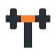
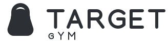

T esencial
La más simpleLa inicial de Target, firme y directa. Es la opción más limpia y fácil de reconocer a tamaño pequeño.
Blanco y gris oscuro primero. El naranja, en su lugar.
Mandarina se queda, pero deja de llenar la página. La personalidad aparece en el logo, en las actividades y en detalles concretos; no en grandes bloques naranjas.
Descargar propuestas PDFBlanco para respirar. Gris oscuro para leer. Gris claro para ordenar. Naranja para una acción principal o un detalle del símbolo.
#FFFFFF#2C3035#F5F6F7#F48335Ejemplo con T barra, no una elección definitiva del logo.
Tu gimnasio de barrio, en Florida.
Musculación, funcional y clases grupales. Un espacio para entrenar, con un equipo que te acompaña.
Ver clasesEn la web final, las fotos reales del gimnasio podrán contar el lugar. No las reemplazamos por más decoración.
Muestra visual. Datos ficticios, sin reservas.
Instructor/a de ejemplo · Martes
Seis rutas para el mismo gimnasio
Mismo nombre y lettering para comparar el símbolo. Cada opción incluye color, monocromo y símbolo aislado.
La inicial de Target, firme y directa. Es la opción más limpia y fácil de reconocer a tamaño pequeño.
La T de Target y una barra de entrenamiento en el mismo gesto. Conecta el nombre con el gimnasio sin recargarlo.

Se entiende de inmediato: es un gimnasio. Una mancuerna compacta, sin escudos, músculos ni efectos de volumen.
Las iniciales del nombre en un bloque compacto. Menos literal; útil para ropa, avatares y señalética.
Un disco de pesas que también recuerda a un objetivo. Vincula el significado de Target con el equipamiento real.
Una silueta de entrenamiento clara, con curvas suaves. Conserva el lado amable de Cerca y suma una referencia deportiva.

Logo aprobado: Mancuerna. Esta ruta y la portada Cerca/Mandarina fueron aprobadas para la web completa. Consultar el manual final.
Esta lámina conserva las alternativas de exploración, no una certificación de marca registrada. El naranja es un detalle opcional: todos funcionan a una tinta. En pequeño se usa el símbolo, no el logo completo.